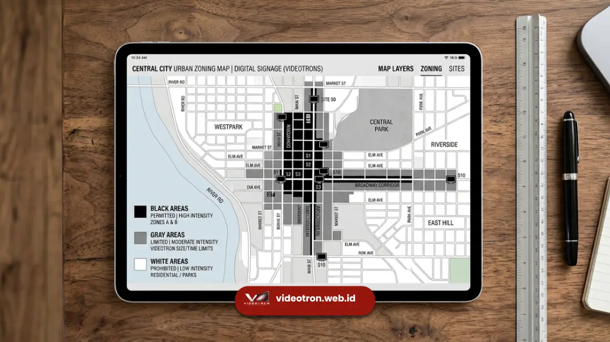

Aturan konten videotron informasi publik mewajibkan alokasi tayangan layanan masyarakat minimal dua puluh persen, bebas muatan politik praktis, serta mematuhi etika periklanan nasional.
- Pemilik videotron komersial wajib memberikan slot tayangan untuk program pemerintah daerah (CSR).
- Desain konten harus mematuhi standar rasio kontras dan ukuran font untuk menjaga keamanan berkendara.
- Lokasi pemasangan diatur ketat oleh zonasi tata kota untuk mencegah penumpukan reklame dan polusi visual.
- Pelanggaran regulasi dapat berakibat pada pencabutan Izin Penyelenggaraan Reklame secara sepihak oleh otoritas terkait.
Setiap pengelola videotron komersial di kawasan padat lalu lintas wajib mengalokasikan slot waktu tayang 20% hingga 30% secara gratis untuk konten sosialisasi publik pemerintah.
Berapa Persentase Wajib Konten Publik pada Videotron Komersial?
Persentase wajib tayangan konten informasi publik pada videotron komersial berkisar antara dua puluh hingga tiga puluh persen dari total jam operasional harian setiap titik.
Aturan ini dibuat agar pemerintah daerah tidak perlu selalu membangun infrastruktur fisik videotron dari awal menggunakan anggaran daerah. Sebagai bagian dari syarat keluarnya Izin Mendirikan Bangunan (IMB) Reklame, pihak swasta menandatangani komitmen tayang layanan masyarakat. Implementasinya bervariasi. Beberapa kota meminta akumulasi waktu tayang, misalnya empat jam dari total operasional dua belas jam. Kota lain mensyaratkan frekuensi pemutaran bergiliran, yaitu satu video sosialisasi pemerintah ditayangkan setiap setelah empat iklan komersial selesai berputar. Slot waktu tayang publik ini dikelola langsung materinya oleh Dinas Komunikasi dan Informatika setempat.
Apa Saja Syarat Desain Konten Informasi Publik?
Syarat desain konten informasi publik mengharuskan penggunaan huruf tebal tanpa kait, kontras warna yang tajam antara latar dan teks, serta minim teks berukuran kecil.
Mendesain konten untuk layar di jalan raya sangat berbeda dengan layar televisi di rumah. Standar tipografi mewajibkan jenis font sans-serif seperti Arial atau Helvetica karena lebih mudah dibaca dari jarak jauh. Latar belakang putih terang atau neon yang menyilaukan pada malam hari sangat dilarang karena berisiko membutakan pandangan pengemudi seketika (glare effect). Video yang ditayangkan juga tidak diperbolehkan menggunakan efek transisi lampu strobo (berkedip cepat) karena dapat memicu masalah medis neurologis pada pengguna jalan tertentu. Pesan utama harus sudah dapat dipahami sepenuhnya dalam tiga detik pertama masa tayang.

Bagaimana Aturan Titik Lokasi Pemasangan Videotron?
Aturan titik lokasi pemasangan videotron mengikuti sistem zonasi kota yang membagi area menjadi zona larangan mutlak, zona kendali ketat, dan zona komersial bebas.
Zona larangan mutlak (white zone) mencakup area sekitar istana negara, markas militer, kawasan ibadah utama, cagar budaya, dan persimpangan tanpa lampu lalu lintas (blind spot jalan). Di titik-titik ini, pendirian layar digital sama sekali tidak diizinkan dengan alasan menjaga kekhidmatan lingkungan dan keselamatan berkendara.
Zona kendali ketat mengatur bahwa struktur reklame digital hanya boleh dipasang menempel pada dinding gedung (wall-mounted) dan tidak boleh berdiri di atas trotoar pejalan kaki. Pemasangan tiang mandiri (freestanding) umumnya hanya diizinkan di ruang milik jalan yang sangat luas atau di dalam batas properti privat komersial yang telah mendapatkan rekomendasi teknis dari Dinas Pekerjaan Umum.
Apa Larangan Utama dalam Konten Videotron Publik?
Larangan utama konten videotron publik meliputi penayangan materi kampanye politik di luar masa pemilu, materi pornografi, informasi belum terverifikasi (hoaks), dan produk tembakau/alkohol.
Karena statusnya sebagai saluran yang membawa narasi informasi umum dan bersinggungan langsung dengan masyarakat dari segala umur, seleksi konten berlangsung ketat. Penayangan iklan rokok di videotron publik jalan protokol kini telah dilarang total di hampir seluruh wilayah provinsi di Indonesia. Penyebaran informasi kebencian, SARA (Suku, Agama, Ras, dan Antargolongan), dan materi yang menyerang lembaga negara tertentu dipastikan akan langsung ditindaklanjuti secara pidana.
Pemerintah memiliki akses darurat (override access) yang dapat seketika mematikan layar atau mengganti tayangan menjadi hitam apabila mendeteksi adanya intrusi sistem atau pelanggaran konten berat yang lolos dari moderasi agen reklame. Anda bisa membaca panduan lengkap videotron informasi publik untuk pemahaman yang lebih komprehensif.
Memahami regulasi dan aturan konten videotron informasi publik sama pentingnya dengan memahami teknologi alat tersebut. Bagi pemerintah daerah, penerapan zonasi yang tegas akan menjaga estetika tata kota dari serbuan rimba reklame digital. Bagi agensi swasta maupun desainer, mematuhi persentase konten layanan masyarakat, standar desain tipografi yang ramah mata pengemudi, serta etika pembatasan kecerahan cahaya pada waktu malam adalah keharusan mutlak. Kepatuhan holistik terhadap regulasi ini akan memastikan integrasi teknologi media ruang luar membawa manfaat penyebaran informasi secara optimal tanpa mengorbankan kenyamanan publik dan keselamatan berlalu lintas.

Hawa Nadira
LED Technology Consultant dan Visual Educator
Konsultan dan spesialis solusi display digital berdedikasi tinggi yang fokus membagikan panduan edukatif mengenai penerapan teknologi layar LED videotron untuk kebutuhan interior modern di Indonesia.